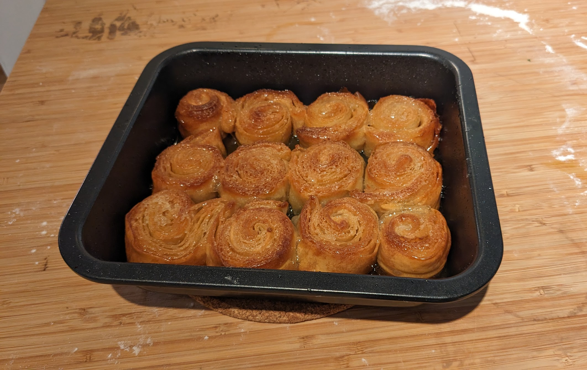
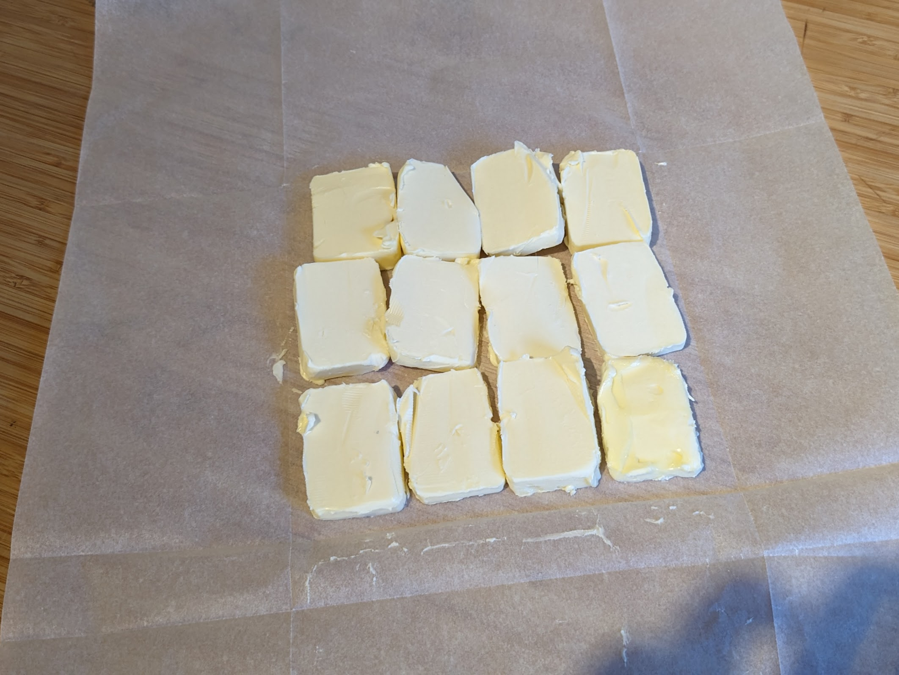
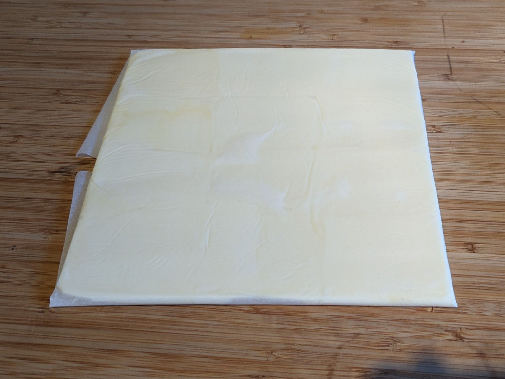
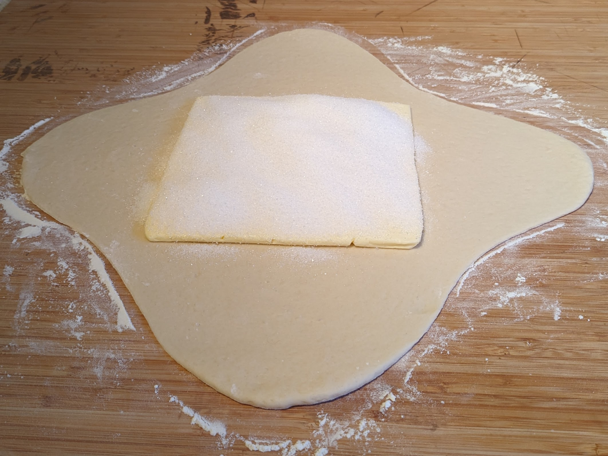
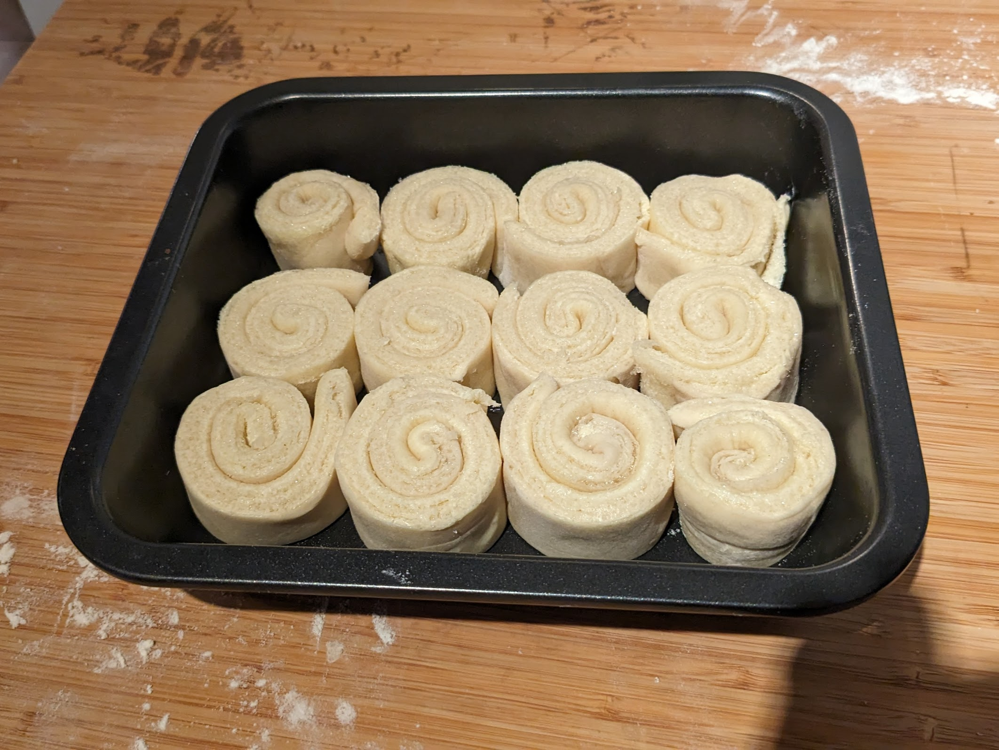

Kouign-amann

Pour 6-8 personnes :
- 200g de farine
- 180g de beurre demi-sel
- 180g de sucre
- 125g d'eau
- 2g de levure de boulangerie sèche, ou 8g de levure fraîche
- Délayer la levure dans un peu d'eau. Mettre la farine dans un bol, verser dessus l'eau progressivement en mélangeant au fur et à mesure jusqu'à obtenir une boule de pâte qui soit souple et élastique, mais ne colle pas aux doigts. Laisser reposer la pâte une demi-heure.
- Plier une feuille de papier sulfurisé pour former un carré fermé d'environ 15cm de côté (la taille exacte importe peu). Couper le beurre en morceaux, le disposer dans le carré, replier le papier sulfurisé. Puis, prendre un rouleau à pâtisserie et taper / rouler avec sur le carré fermé pour que ça forme un beau carré de beurre approximativement plat. Laisser reposer au frigo.
- Sortir la pâte du frigo. Sur un plan de travail fariné, étaler la pâte pour former une croix — un carré central légèrement plus grand que le carré de beurre, et où on aplatit les bords pour former les bras de la croix.
- Disposer le carré de beurre sur la pâte, puis recouvrir du sucre, et refermer
les bras de la croix ; il ne faut pas que le beurre ou le sucre ne dépasse.
- Retourner la pâte, l'aplatir en longueur au rouleau à pâtisserie, et la plier en trois.
- Retourner la pâte, lui faire faire un quart de tour, l'aplatir en longueur, la plier en trois à nouveau, et l'aplatir encore un peu.
- Faire préchauffer un four à 200°C. Couper des lanières de 2cm environ dans la pâte, les rouler délicatement, et les disposer dans un moule aux bords assez hauts (pour éviter que le beurre ne s'échappe pendant la cuisson).
- Enfourner entre 35 et 40 minutes, jusqu'à ce que ça soit bien doré. Si on veut présenter le kouign-amann sur un plat, le démouler alors qu'il est encore tiède, sinon le caramel durcit et ça devient impossible de l'enlever du moule en un seul morceau.
Remarque 1 : cette recette a l'air assez technique, mais la bonne nouvelle, c'est que si quelque chose se passe mal (par exemple si la pâte se déchire pendant le feuilletage, ou si c'est difficile de faire des belles lanières), c'est pas très grave — ça va quand même être réjouissant une fois cuit.
Remarque 2 : si on a pas de beurre demi-sel, on peut ajouter 6g de sel (une cuillère à café de sel fin, un peu plus si on utilise de la fleur de sel) au beurre doux.
Remarque 3 : pour une version un peu plus traditionnelle, plutôt que faire des lanières la fin, aplatir simplement la pâte pour faire une forme vaguement ronde, la mettre dans un plat rond, dorer avec un peu de lait, et faire quelques traces en losange sur le dessus de la pâte avant d'enfourner. Dans ce cas, c'est une bonne idée de surveiller la cuisson et toutes les 10-15 minutes, de récupérer un peu de beurre fondu sur les côtés du moule pour le verser sur le dessus, pour que ça dore bien.

Beurre disposé sur du papier sulfurisé

Une fois le papier sulfurisé replié et le beurre aplati

Pâte avant feuilletage

Bandes de pâte enroulées après feuilletage
Retour à la liste des recettes